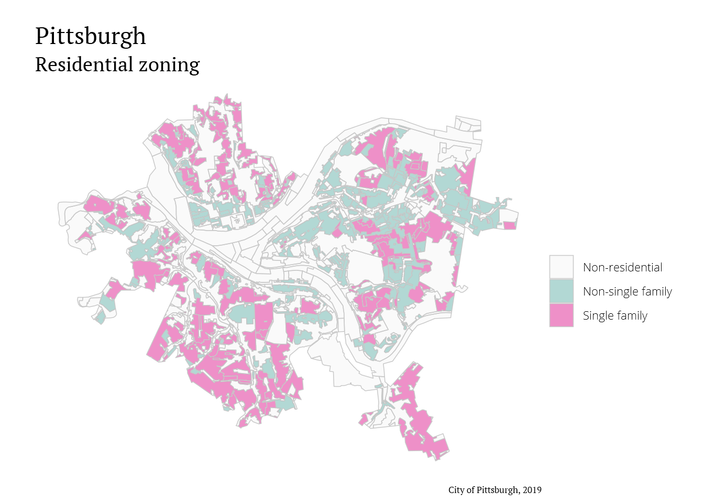
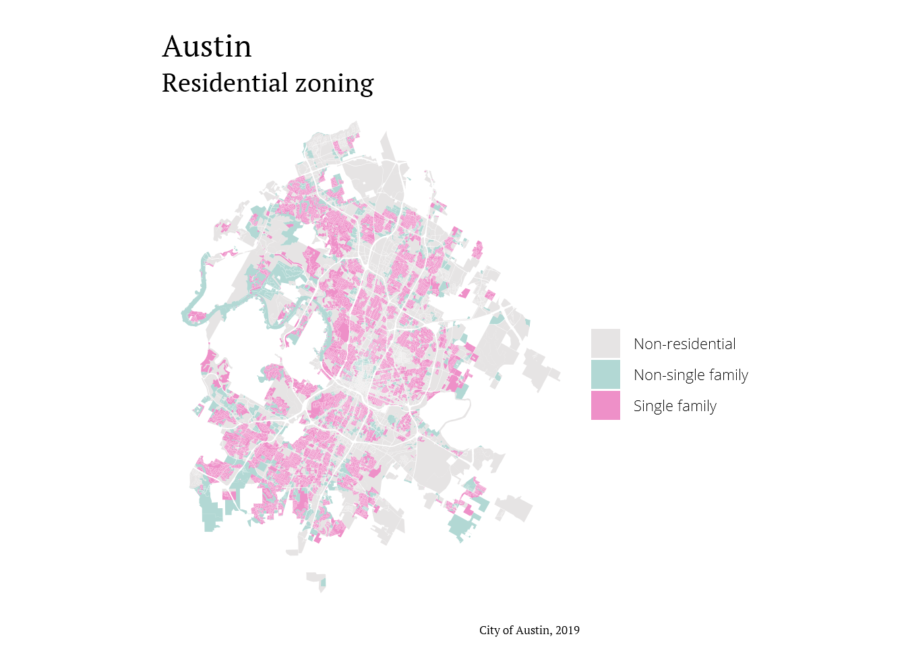
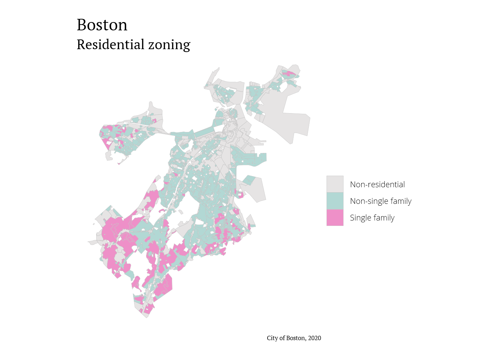

Liz Roten
a data science blog
Housing Density in US Cities
Since I got back from #rstudioconf, I’ve started to warm up to the idea of sharing my code, even if it isn’t perfect. There may be typos, the blog post may be short, but sharing my work is beneficial for the greater #rstats community, and supports open-source data science.
So this belated post is inspired by Cities Start to Question an American Ideal: A House With a Yard on Every Lot, in which the NY Times examines residential zoning patterns in different cities. Residential areas are split into two categories, single-family detached homes and all other housing such as townhomes, duplexes, and apartments. This is especially relevant given the current housing shortage across the US.
Import data
First, lets import our packages.
# spatial packages
library(sf)
library(geojsonsf)
library(rgdal)
library(lwgeom)
# data cleaning
library(dplyr)
library(janitor)
library(fuzzyjoin)
library(stringr)
# plotting
library(ggplot2)
library(showtext)
library(DT)Next, lets import our data. read_sf() is super useful here, because it will read in an sf object from a link to the spatial file we want. In this case, the link comes from each city’s open data portal
When you go to the data portal and find the dataset you want, right click the link to download the GeoJSON and copy the link. Then, paste it into read_sf() and you’re good to go! Say goodbye to massive data folders!
For this post, I’ve chosen (somewhat randomly) Pittsburgh, PA, Austin, TX, and Boston, MA.
pitts <- read_sf("http://pghgis-pittsburghpa.opendata.arcgis.com/datasets/e67592c2904b497b83ccf876fced7979_0.geojson")
boston <- read_sf("http://bostonopendata-boston.opendata.arcgis.com/datasets/b601516d0af44d1c9c7695571a7dca80_0.geojson?outSR={%22latestWkid%22:2249,%22wkid%22:102686}")
austin <- read_sf("https://data.austintexas.gov/api/geospatial/5rzy-nm5e?method=export&format=GeoJSON")Here is the styling I’m using on the maps.
showtext_auto()
font_add("Lato", "Lato-Regular.ttf")
font_add("Open Sans Light", "OpenSans-Light.ttf")
font_add("PT Sans", "PTSans-Regular.ttf")
font_add("PT Serif", "PTSerif-Regular.ttf")
## font sizes --------------------------------------------
size_header <- 14
size_subtitle <- 12
size_axis_title <- 12
size_legend_title <- 12
size_axis_text <- 8
size_legend_text <- 8
size_caption <- 6
## color -------------------------------------------------
background_color <- "#ffffff"
blue <- "#66b2a9"
pink <- "#dd2292"
my_colors <- c(
"#9BABBF",
"#8C694A",
"#6C733C",
"#D9B991"
)
## theme function -----------------------------------------
my_theme <- function(...) {
theme_void() +
theme(
### plot and panel-----------------------------------
plot.background = element_rect(
fill = background_color,
linetype = 0,
colour = NA
),
panel.background = element_rect(
fill = background_color,
linetype = 0,
color = NA
),
panel.grid = element_blank(),
plot.margin = unit(c(.5, .5, .2, .5), "cm"),
panel.border = element_blank(),
### title and caption -------------------------------
title = element_text(family = "PT Serif",
size = size_header),
plot.caption = element_text(size = size_caption),
### axis and strip text ------------------------------
strip.text = element_blank(),
axis.title = element_text(size = size_axis_title),
axis.text = element_blank(),
## legend text ----------------------------------------
legend.text = element_text(
family = "Open Sans Light",
size = size_legend_text
)
)
}Pittsburgh
So, what are our column names?
names(pitts)## [1] "objectid" "area" "perimeter" "zoning_"
## [5] "zoning_id" "zon_new" "shape_leng" "correctionlabel"
## [9] "full_zoning_type" "legendtype" "municode" "status"
## [13] "created_user" "created_date" "last_edited_user" "last_edited_date"
## [17] "Shape__Area" "Shape__Length" "geometry"We are most interested in the “legendtype” column.
unique(pitts$legendtype)## [1] "Planned Unit Development" "Two-Unit Residential"
## [3] "Urban Neighborhood Commercial" "Single-Unit Detached Residential"
## [5] "Single-Unit Attached Residential" "Educational/Medical Institution"
## [7] "Hillside " "Parks"
## [9] "Multi-Unit Residential" "Golden Triangle "
## [11] "Riverfront" "Neighborhood Industrial"
## [13] "Local Neighborhood Commercial " "Highway Commercial"
## [15] "Urban Industrial" "Mount Oliver Borough"
## [17] "Three-Unit Residential" "General Industrial "
## [19] "Oakland Public Realm" "Specially Planned"
## [21] "Neighborhood Office" "Grandview Public Realm"
## [23] "Uptown Public Realm"These are useful descriptions! We will re-code them into three categories: single-family detached, not single-family detached, and non-residential.
pitts_clean <- pitts %>%
rowwise() %>%
mutate(zone_simple = if(legendtype %in% c("Single-Unit Attached Residential",
"Two-Unit Residential",
"Three-Unit Residential",
"Multi-Unit Residential")){
zone_simple = "non_sfd"
} else if (legendtype == "Single-Unit Detached Residential"){
zone_simple = "sfd"
} else {
zone_simple = "non_res"
}) %>%
st_as_sf()Now for the map!
For the caption, we can take advantage of the “last_edited_date” column and automatically put in the correct date!
ggplot() +
geom_sf(data = pitts_clean,
aes(fill = zone_simple),
color = "#C8C8C8",
size = 0.2,
alpha = 0.5) +
labs(title = "Pittsburgh",
subtitle = "Residential zoning",
fill = "",
caption = paste("City of Pittsburgh,",
format(pitts_clean$last_edited_date, "%Y"))) +
my_theme() +
scale_fill_manual(values = c("whitesmoke", blue, pink),
labels = c("Non-residential",
"Non-single family",
"Single family")) 
This map looks like its missing something, so I’m going to add in hydrology features.
# import "Allegheny County Hydrology Areas"
pitt_water <- read_sf("http://openac-alcogis.opendata.arcgis.com/datasets/9ff3941e47f74c609057cb60f4992852_0.geojson") %>%
lwgeom::st_make_valid() %>%
st_intersection(pitts) # instersect with city limitsggplot() +
geom_sf(data = pitts_clean,
aes(fill = zone_simple),
color = "#C8C8C8",
size = 0.2,
alpha = 0.5) +
labs(title = "Pittsburgh",
subtitle = "Residential zoning",
fill = "",
caption = paste("City of Pittsburgh,",
format(pitts_clean$last_edited_date, "%Y"))) +
my_theme() +
scale_fill_manual(values = c("whitesmoke", blue, pink),
labels = c("Non-residential",
"Non-single family",
"Single family")) +
geom_sf(data = pitt_water,
fill = "lightblue",
color = "NA")
Austin
Lets look at the column names for Austin.
names(austin)## [1] "created_by" "shape_area" "created_date" "zoning_ztype"
## [5] "objectid" "shape_length" "modified_by" "modified_date"
## [9] "zoning_id" "geometry"Next, we can look at “zoning_ztype.”
head(unique(austin$zoning_ztype))## [1] "SF-3-H" "I-RR" "SF-3-NP" "GR-CO-NP" "DMU" "CS-V-CO"YIKES. Looks like we need a data dictionary.
I would love to say that I elegantly extracted the zoning codes from the city’s website, but I ended up copying the HTML table to Excel and manipulating the columns from there. The text-to-columns tool is very useful fo instances like this. I also added codes “SF-4” and “MF”, which weren’t explicitly provided.
austin_desc <- read.csv("data/zoning_descriptions.csv") %>%
clean_names()
DT::datatable(austin_desc, rownames = FALSE)We are going to break up Austin into two separate datasets: one with residential zones, and the other with non-residential zones.
We will join our spatial data with the code descriptions using “zoning_ztype”, then add a column for residential zoning type using str_detect().
austin_w_desc <- left_join(austin,
austin_desc,
by = c("zoning_ztype" = "code"))
austin_coded <- austin_w_desc %>%
group_by(objectid) %>%
mutate(residence_zone = # detect key character sequences and add
case_when(stringr::str_detect(zoning_ztype, "SF") ~ "Single family",
stringr::str_detect(zoning_ztype, "MH") ~ "Non-single family",
stringr::str_detect(zoning_ztype, "MF") ~ "Non-single family",
stringr::str_detect(zoning_ztype, "LA") ~ "Non-single family",
stringr::str_detect(zoning_ztype, "RR") ~ "Non-single family",
TRUE ~ "Non-residential"))Now, lets map it! I adjusted the fill color for non-residential zones because the scale is much smaller than Pittsburgh.
ggplot() +
geom_sf(data = austin_coded,
mapping = aes(fill = residence_zone),
color = NA,
alpha = 0.5) +
scale_fill_manual(values = c("snow3", blue, pink),
labels = c("Non-residential",
"Non-single family",
"Single family")) +
labs(title = "Austin",
subtitle = "Residential zoning",
fill = "",
caption = paste("City of Austin,",
format(austin_coded$modified_date, "%Y"))) +
my_theme()
Boston
Lets check our column names.
names(boston) ## [1] "OBJECTID" "ZONE_" "DISTRICT" "MAPNO"
## [5] "ARTICLE" "SUBDISTRIC" "Unique_Code" "FAR"
## [9] "Shape_STArea__" "Shape_STLength__" "Zone_Desc" "geometry"And then the “Zone_Desc” column.
head(unique(boston$Zone_Desc))## [1] "Community Commercial" "Waterfront Manufacturing"
## [3] "Restricted Manufacturing" "Neighborhood Development Area"
## [5] "Local Industrial" "Waterfront Commercial"HA! Sweet, sweet human-readable descriptions!
To make things a little easier, we can break out the entire dataset into residential and non-residential groups, and then rbind() them back together.
boston_res <- boston %>%
filter(SUBDISTRIC == "Residential") %>%
rowwise() %>%
mutate(category = if(Zone_Desc == "One-Family Residential"){
category = "Single Family"
} else {
category = "Non-single family"
}) %>%
st_as_sf()Now create the non-residential and bind the two back together.
boston_non_res <- boston %>%
filter(SUBDISTRIC != "Residential",
SUBDISTRIC != "Open Space", # remove primarily water features
DISTRICT != "Boston Harbor",
DISTRICT != "Harborpark: Dorchester Bay/Neponset River Waterfront") %>%
mutate(category = "Non-residential")
boston_all <- rbind(boston_res, boston_non_res)Finally, map!
ggplot() +
geom_sf(data = boston_all,
mapping = aes(fill = category),
color = "#c8c8c8",
size = 0.1,
alpha = 0.5) +
scale_fill_manual(values = c("snow3", blue, pink),
labels = c("Non-residential",
"Non-single family",
"Single family")) +
labs(title = "Boston",
subtitle = "Residential zoning",
fill = "",
caption = "City of Boston, 2020") +
my_theme()
Thats all I’ve got for today. Thanks